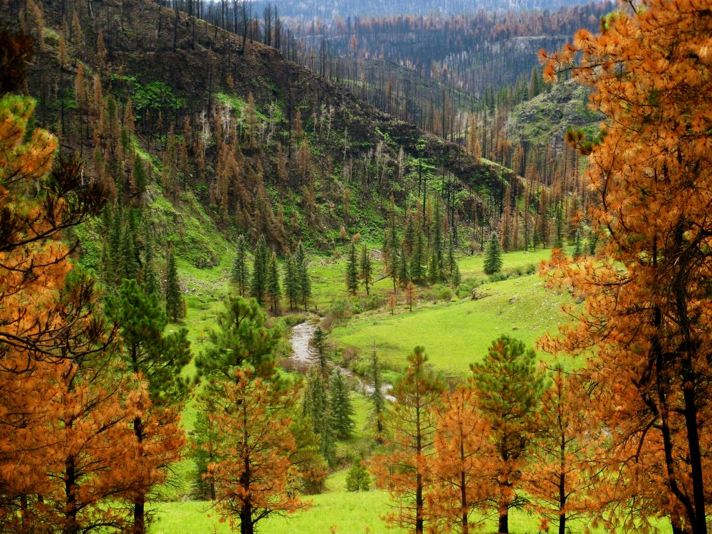
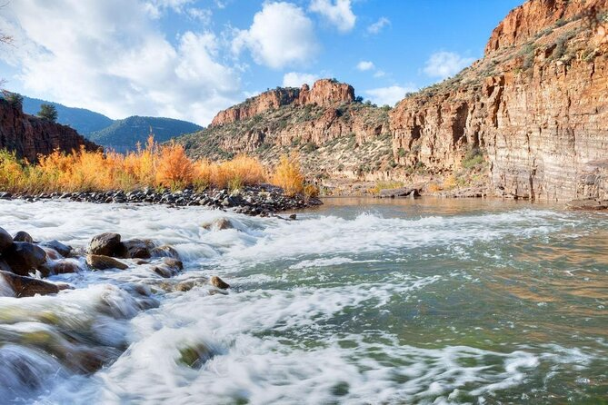
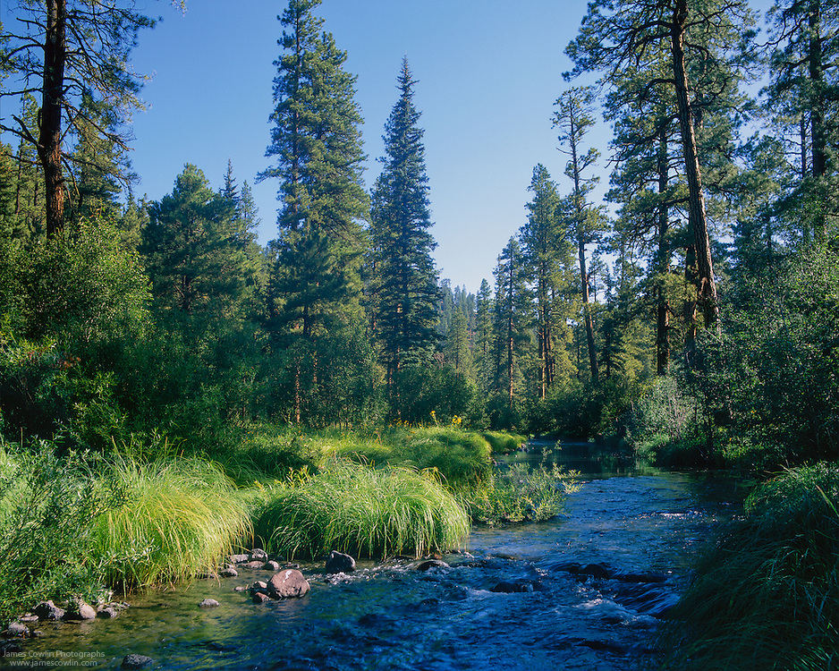
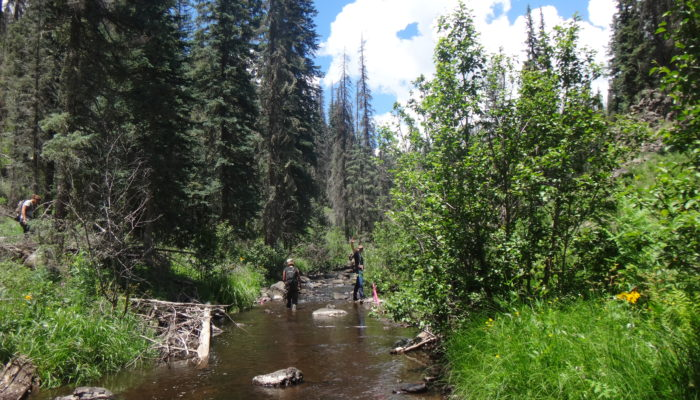

Rivers to Explore
Black River

For the off-road enthusiast who knows were to go, those areas are also home to some of the most secluded experiences to be found in the entire Southwest. Arizona's Black River runs all the way from near the New Mexico boarder, to central Arizona, where it finally joins the White River, tuning into the Salt River. -G.J Sagi, from the travel handbook Fishing Arizona.- Anyone who has made the trip to the Black River will agree that it is an Arizona gem when it comes to ruggedness, fishing quality, and adventure. Known by many as "The Best Smallmouth Fishery in the State, " the Black River will continuously keep your lines tight with the amazing aggressiveness and number of fish that inhabit it. Many people have their "secret spots," or favorite parts of the river where they return year after year, while others choose to explore and experience all parts of the river. - Ted Standage, from the the book The Lower Black River: An Outdoor Guide-
Salt River

The Salt River is formed by the confluence of the White River and the Black River in the White Mountains of eastern Gila County. It has some of Arizonas best rafting and fishing
East Fork

The East Fork of the Black River runs from above Crescent Lake. The stretch northeast of Crescent Lake is often called the North Fork of the Black River. There are Rainbow Trout, Apache Trout and Brown Trout in the east fork of the Black River, so of which are stocked.
West Fork
